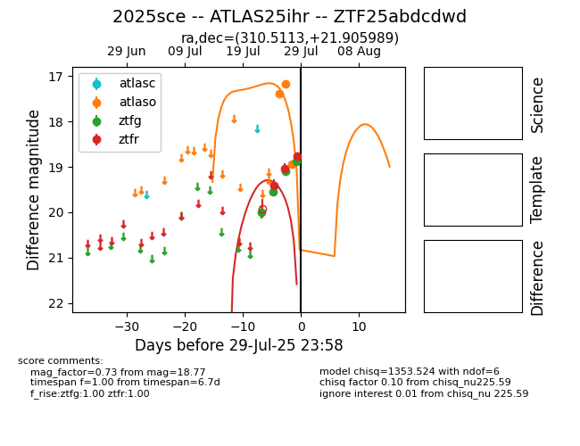

Target 2025sce at 2025-08-08 12:35, see:
FINK: fink-portal.org/2025sce
Lasair: lasair-ztf.lsst.ac.uk/objects/2025sce
ALeRCE: alerce.online/object/2025sce
TNS: wis-tns.org/object/2025sce
YSE: ziggy.ucolick.org/yse/transient_detail/2025sce
alt names
ZTF25abdcdwd (ztf,fink)
2025sce (tns,yse)
ATLAS25ihr (atlas)
coordinates:
equatorial (ra, dec) = (310.5113,+21.90599)
galactic (l, b) = (65.6703,-12.30392)
photometry
last atlaso=18.53, ztfg=18.77, ztfr=18.57
10 atlaso, 8 ztfg, 7 ztfr detections
